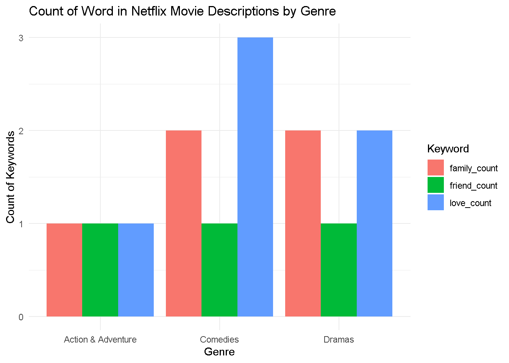
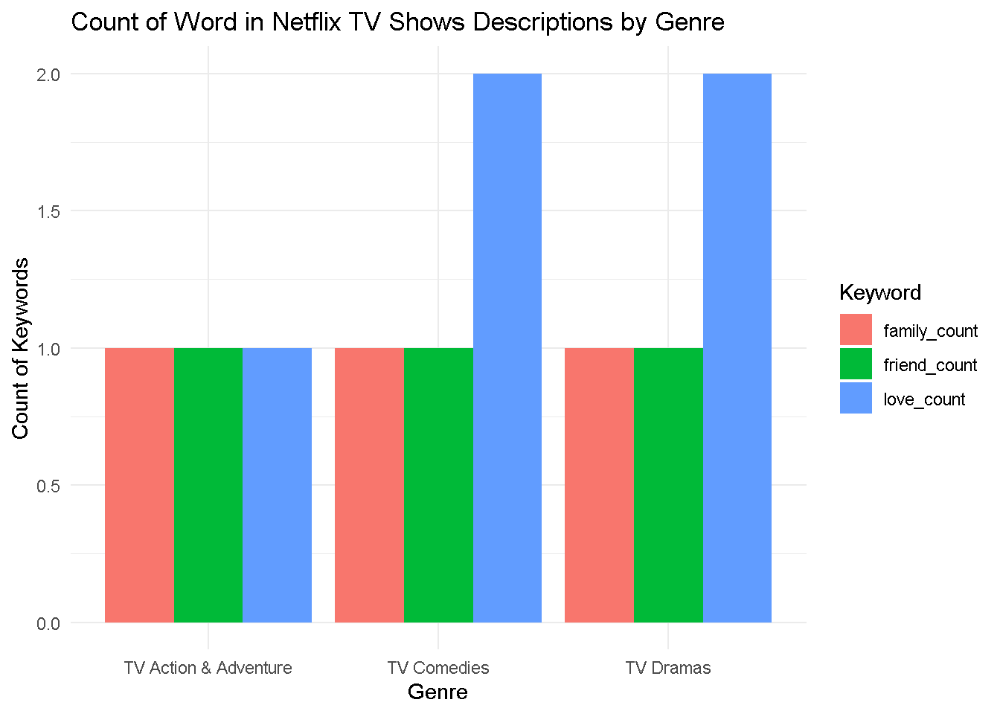
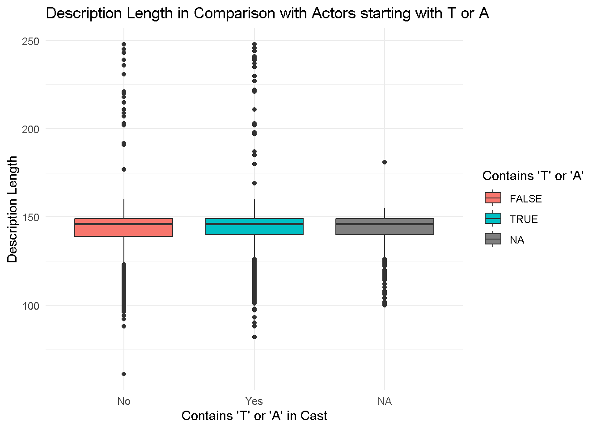

netflix_titles <- readr::read_csv('https://raw.githubusercontent.com/rfordatascience/tidytuesday/master/data/2021/2021-04-20/netflix_titles.csv')Analysis using Netflix Descriptions, genres, and actors.
Netflix Descriptions in correlation to specific words and actors.
Goal
My overall goal is to analyze this Netflix dataset is to: 1. Detect a word in a description, such as family, love, and friend, and compare how many times it appears in certain genres and compare it with others. 2. See how long descriptions are in comparison to movies/shows that have actors that start with T or A followed with a vowel to those that don’t.
Hopefully these graphs can show something useful but due to this dataset being only around ~8000 rows and my observations being very specific may lead to little to no results.
Installing Packages and Data
Using Tidyverse functions and verbs to create graphs. Tidyverse already installed.
Download the Netflix data set from the TidyTueday github.
Mutating New Variables into Dataset
To create graphs that depict the count of times a word is stated in a description along with seeing which rows have or don’t contain an actor that has a name starting with T or A followed with a vowel, we will have to mutate new variables.
We choose the words family, love, and friend to get the count totals per row. These are mutated into new variables.
library(tidyverse)
netflix_titles <- netflix_titles |>
mutate(family_count = str_count(description, "(?i)\\bfamily\\b"), love_count = str_count(description, "(?i)\\blove\\b"), friend_count= str_count(description, "(?i)\\bfriend\\b"))I wanted to just have a column depicting how many genres each row has but this isn’t needed.
netflix_titles <- netflix_titles |>
mutate(num_genres = str_count(listed_in, ",") + 1)Mutate a new column that depicts the length of the description.
netflix_titles <- netflix_titles |>
mutate(description_length = str_length(description))Mutate a new column that says true or false based if the cast contains an actor that has a name that starts with T or A followed with vowel. This can be applied to first or last name.
netflix_titles <- netflix_titles |>
mutate(actor_TA = str_detect(cast, "[TA][aeiou]"))Wrangling Data
First, I separate the rows in order individualize the genres into multiple rows. This will be useful later when wanting to only look at movies/shows that have certain genres.
library(ggplot2)
library(tidyr)
library(dplyr)
netflix_data_long <- netflix_titles |>
separate_rows(listed_in, sep = ", ") # Splitting genres by comma and spaceI want to create two new datasets, listed for movies and tvshows. That only contain the genres, comedies, dramas, and action & adventure.
netflix_filtered_movies <- netflix_data_long |>
filter(listed_in %in% c("Comedies", "Dramas", "Action & Adventure") )
netflix_filtered_shows <- netflix_data_long |>
filter(listed_in %in% c("TV Comedies", "TV Dramas", "TV Action & Adventure") )Lastly, I pivot_longer the data in order to put each count into its own row, which will be useful when plotting later. I also filtered this into two seperate datasets that only contain movies or shows since I want to depict two graphs of the two.
netflix_long_movies <- netflix_filtered_movies |>
pivot_longer(cols = c(family_count, love_count, friend_count),
names_to = "keyword",
values_to = "count")
netflix_long_shows <- netflix_filtered_shows |>
pivot_longer(cols = c(family_count, love_count, friend_count),
names_to = "keyword",
values_to = "count")
netflix_movies_filter <- netflix_long_movies |>
filter( type == "Movie")
netflix_shows_filter <- netflix_long_shows |>
filter( type == "TV Show")Final Visuals
I created three graphs located below answering my questions at the beginning.
Count of Word in Netflix Movie Descriptions by Genre
In this data set, about movies, we can see that the word “love” is mentioned the most in the description of comedies and least in Action & Adventure. Friend is mentioned the same amount of times throughout the three genres. Family is mentioned the most in Comedies and Dramas and the least in comedies.
library(ggplot2)
library(tidyr)
library(dplyr)
ggplot(netflix_movies_filter, aes(fill = keyword, y = count, x = listed_in)) +
geom_bar(position = "dodge", stat = "identity") +
labs(title = "Count of Word in Netflix Movie Descriptions by Genre",
x = "Genre",
y = "Count of Keywords",
fill = "Keyword") +
theme_minimal() 
Count of Word in Netflix Shows Descriptions by Genre
In this dataset, about shows, the most insightful thing we see is that love is mentioned the most in Dramas and comedies in comparison to Action & Adventure.
library(ggplot2)
library(tidyr)
library(dplyr)
ggplot(netflix_shows_filter, aes(fill = keyword, y = count, x = listed_in)) +
geom_bar(position = "dodge", stat = "identity") + # Grouped bars
labs(title = "Count of Word in Netflix TV Shows Descriptions by Genre",
x = "Genre",
y = "Count of Keywords",
fill = "Keyword") +
theme_minimal() 
Description Length in Comparison with Actors starting with T or A
Since the boxplot isn’t that different between each other, we can make grand observation. One thing to note is that cast labeled as N/A has very short descriptions.
library(ggplot2)
ggplot(netflix_titles, aes(x = as.factor(actor_TA), y = description_length, fill = as.factor(actor_TA))) +
geom_boxplot() +
labs(title = "Description Length in Comparison with Actors starting with T or A",
x = "Contains 'T' or 'A' in Cast",
y = "Description Length",
fill = "Contains 'T' or 'A' ") +
scale_x_discrete(labels = c("No", "Yes")) +
theme_minimal()
Reflection
Overall, I feel like I can gain more insight if I use multiple words and more genres. The word “love”, “family”, and “friend” is very specific and that makes it so our histograms are so small. It would have been better if I used more generic words or used a variety of words. On the counterpart, when looking at actors that start with T or A, I need to be more specific so I can see a difference between the two groups.
Data Background
Originally, before being inputted into TidyTuesay, this data can be found from Kaggle by the user Shivam Bansal who uploaded it 3 years ago. Found on this website: https://www.kaggle.com/datasets/shivamb/netflix-shows
This data has had for 500k downloads, and 3 million views from users. No purpose or origin is given as to why this data was even collected so it appears as if this user just gathered this data for the public to use as it was accessed through a public domain. The user has done the same for other websites such as Amazon Prime Video, disney+ and Hulu. This is what the author commented on the description of the dataset:
“Netflix is one of the most popular media and video streaming platforms. They have over 8000 movies or tv shows available on their platform, as of mid-2021, they have over 200M Subscribers globally. This tabular dataset consists of listings of all the movies and tv shows available on Netflix, along with details such as - cast, directors, ratings, release year, duration, etc.” ### Reference
I got my data set from the tidy tuesday website/section on github. Found at:
https://github.com/rfordatascience/tidytuesday/blob/master/data/2021/2021-04-20/readme.md